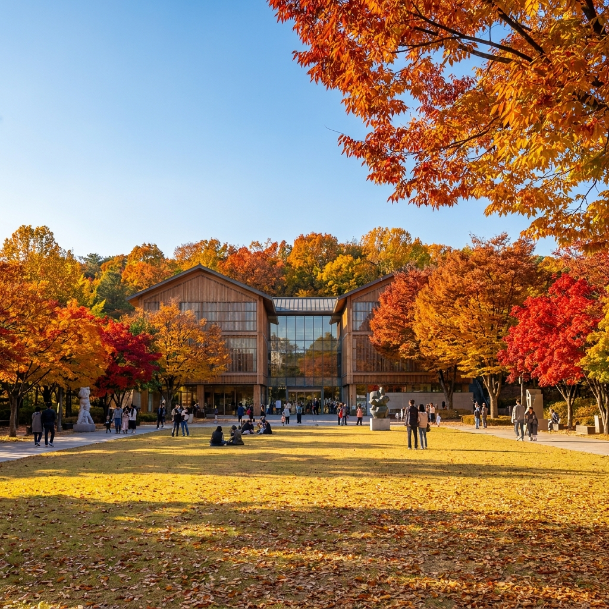
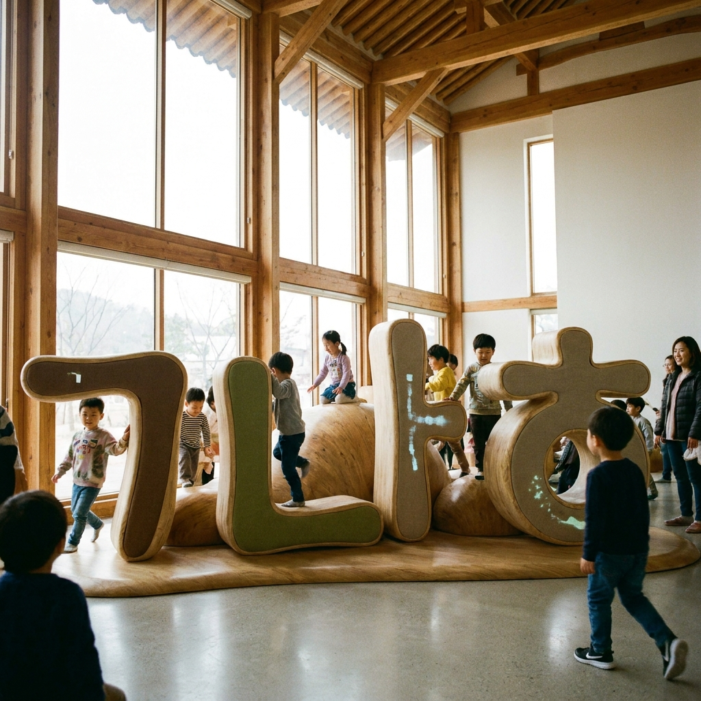

한글날 국립한글박물관·국립중앙박물관 무료 관람 행사 — 10월 9일 특별 전시 일정표와 고궁 방문 체크리스트
다가오는 2026년 10월 9일(금요일) 한글날은 1926년 일제강점기 조선어연구회가 '가갸날'을 제정한 지 정확히 100주년이 되는 뜻깊은 국경일입니다. 서울 용산의 국립한글박물관과 인접한 국립중앙박물관에서는 한글주간을 맞아 상설전시실을 전면 무료로 개방하고 다채로운 특별 기획전시와 어린이 체험 한마당을 선보입니다.
국립한글박물관의 한글날 제정 100주년 기념 특별전과 한글놀이터는 무료로 운영되지만, 인기 시간대(오전 10시~오후 3시) 체험 프로그램은 누리집 사전 예약이 필수입니다. 또한 4대 궁(경복궁·창덕궁·덕수궁·창경궁)은 한글날 일괄 무료입장은 아니지만, 한복을 착용할 경우 상시 무료입장이 적용되어 도심 속 역사 나들이를 알뜰하게 즐길 수 있습니다.
용산 국립박물관 단지의 주요 무료 관람 일정표와 고궁 입장료 비교표, 주차 및 대중교통 팁, 그리고 가족 나들이 추천 동선 체크리스트를 미리 확인해 보세요.

한글주간을 맞아 다채로운 문화 축제가 열리는 국립한글박물관 가을 전경 / AI 제작 이미지
01 | 2026년 한글날 제정 100주년의 의의와 10월 9일 공휴일 문화 행사 개요
1446년 세종대왕이 훈민정음을 반포한 것을 기념하는 한글날은 우리 민족 고유의 문자인 한글의 우수성과 독창성을 기리는 법정 공휴일입니다.
특히 2026년은 일제 탄압 속에서도 우리말과 글을 지키고자 1926년 음력 9월 29일 지정했던 '가갸날' 100주년이 되는 해로, 문화체육관광부와 국립한글박물관을 비롯한 전국 주요 문화 기관에서 그 어느 때보다 풍성한 기념 문화행사가 펼쳐집니다.
공휴일을 맞이하여 가족, 연인, 친구와 함께 도심 속에서 우리 문화의 자긍심을 느끼고 가을의 정취를 만끽하려는 나들이 인파가 집중될 것으로 예상됩니다.
국립박물관과 서울 고궁 일대는 쾌적한 보행로와 정원이 잘 가꾸어져 있어 문화 관람과 가을 산책을 동시에 누리기에 가장 훌륭한 선택지입니다.
02 | 국립한글박물관 한글주간 특별 전시 및 무료 문화 축제 프로그램
서울 용산구 서빙고로에 위치한 국립한글박물관은 한글의 역사와 가치를 집대성한 전문 박물관으로, 상설전시실 입장료가 전액 무료입니다.
한글주간(10월 초순~10월 9일) 동안에는 훈민정음 해례본 영인본 전시를 비롯해, 근대 한글 교과서, 한글 활자 변천사, 디지털 시대의 한글 타이포그래피 등 시대별 유물을 한자리에서 만날 수 있습니다.
야외 잔디마당에서는 한글 예쁜 글씨 쓰기 대회, 한글 캘리그라피 엽서 만들기, 세종대왕 어진 퍼즐 맞추기, 전통 국악 공연 등 다채로운 야외 참여형 무료 이벤트가 펼쳐집니다.
전문 큐레이터의 특별 해설 프로그램도 하루 3~4회 진행되므로, 방문 전 현장 안내 데스크에서 해설 시간을 확인하시는 것을 추천합니다.
03 | 어린이와 함께하는 국립한글박물관 한글놀이터 사전 예약 방법
미취학 아동 및 초등학교 저학년 자녀를 동반한 가족 방문객에게 가장 인기 있는 공간은 박물관 3층에 위치한 '한글놀이터'입니다.
한글의 자음과 모음 원리를 신체 놀이와 인터랙티브 미디어 아트로 자연스럽게 배울 수 있도록 구성된 체험형 놀이 공간으로, 1일 7회차(회차당 50분 이용)로 운영됩니다.
한글놀이터는 100% 무료이지만, 안전한 관람 환경 조성을 위해 사전 온라인 예약제를 기본으로 운영합니다. 국립한글박물관 공식 누리집(hangeul.go.kr)에서 관람 희망일 14일 전 오전 00시부터 예약이 열립니다.
공휴일인 10월 9일 한글날 당일 회차는 조기 마감될 가능성이 매우 높으므로, 방문 예정이라면 미리 예약 일정을 확인하고 예약하지 못한 경우 당일 취소표 현장 대기를 노려야 합니다.

어린이들이 온몸으로 한글 원리를 배우는 국립한글박물관 한글놀이터 내부 / AI 제작 이미지
04 | 인접한 국립중앙박물관 상설전시실 무료 관람 및 가을 정원 산책 동선
국립한글박물관 바로 옆에는 대한민국 문화유산의 보고인 국립중앙박물관이 도보 3분 거리에 나란히 자리하고 있습니다.
국립중앙박물관의 상설전시관 역시 관람료가 전액 무료로 운영되고 있어, 두 박물관을 하루에 묶어 관람하기에 동선상 완벽합니다.
선사고대관, 중근세관, 서화관을 비롯해 국보 반가사유상 2점이 나란히 전시된 '사유의 방'과 디지털 실감 영상관은 놓치지 말아야 할 필수 코스입니다.
전시 관람 후에는 박물관 야외의 거울못 호수와 청자정 정자 주변 산책로를 걸어보세요. 가을바람에 흔들리는 수양버들과 국화 화단이 도심 속 완벽한 가을 힐링 쉼터를 제공합니다.
05 | 10월 9일 한글날 주요 문화기관 및 4대 궁궐 관람료·운영시간 비교표
한글날 당일 서울 주요 국공립 문화시설과 고궁의 운영 조건 및 요금을 비교 정리해 드립니다.
| 시설명 |
한글날 운영 시간 |
입장 요금 |
비고 및 무료 혜택 |
| 국립한글박물관 |
10:00 ~ 18:00 |
전액 무료 |
상설전시 무료, 한글놀이터 사전 온라인 예약 권장 |
| 국립중앙박물관 |
10:00 ~ 18:00 |
전액 무료 (상설) |
상설전시 무료, 기획특별전은 별도 발권 |
| 경복궁 |
09:00 ~ 18:00 (입장마감 17:00) |
성인 3,000원 |
한복 착용자 무료, 만 24세 이하 및 만 65세 이상 무료 |
| 창덕궁 (일반관람) |
09:00 ~ 18:00 (입장마감 17:00) |
성인 3,000원 |
한복 착용자 무료 (후원은 별도 유료 예약) |
| 덕수궁 / 창경궁 |
09:00 ~ 21:00 (야간개장) |
성인 1,000원 |
한복 착용자 무료, 야간 조명 산책 추천 |
국가유산청 궁능유적본부 지침상 한글날 당일 4대 궁이 무조건 전 국민 무료 개방되는 것은 아니므로, 일반 관람료 규정을 정확히 인지하고 방문하시는 것이 중요합니다.
06 | 경복궁·창덕궁·덕수궁·창경궁 한글날 입장 팁과 한복 착용 무료입장 혜택
세종대왕이 집현전 학사들과 훈민정음을 창제했던 역사적 무대인 경복궁을 한글날에 방문하는 것은 남다른 역사적 의미를 지닙니다.
수정전(옛 집현전 터) 앞마당에는 한글 창제의 의의를 되새길 수 있는 안내 팻말이 서 있으며, 근정전과 경회루의 가을 풍광이 눈부시게 펼쳐집니다.
궁궐 관람료를 아끼는 가장 스마트한 방법은 '한복 무료입장 가이드라인'을 활용하는 것입니다. 전통한복이나 생활한복(상·하의 갖춤)을 단정하게 착용하고 방문하면 국적과 연령에 상관없이 경복궁, 창덕궁, 덕수궁, 창경궁 모두 무료로 입장할 수 있습니다.
궁궐 인근 한복 대여점에서 2~4시간 대여(통상 1만 5천 원~2만 5천 원 선)하여 가을 궁궐을 배경으로 인생 사진을 남겨보세요.
07 | 광화문광장 '2026 한글한마당' 도심 야외 체험 행사와 볼거리 안내
경복궁 정문 앞 광화문광장에서는 한글날을 기념하는 대규모 도심 문화 축제인 '한글한마당' 행사가 열립니다.
광화문광장 중앙에 자리 잡은 웅장한 세종대왕 동상 앞에서는 헌화와 함께 전통 취타대 행렬, 한글 창제 뮤지컬 갈라 쇼 등 다채로운 길거리 공연이 펼쳐집니다.
세종대왕 동상 지하에 조성된 '세종이야기·충무공이야기' 전시관(무료)으로 내려가면 한글 창제 과정과 해례본 해설, 신기전 등 과학 유물을 디지털 미디어로 깊이 있게 체험할 수 있습니다.
도심 한복판에서 역사와 문화 축제를 함께 누릴 수 있어 박물관 방문 후 대중교통으로 연계하기에 훌륭한 코스입니다.
08 | 국립중앙박물관·한글박물관 대중교통 접근법과 주차 요금 비교
공휴일인 한글날에는 용산 박물관 단지와 광화문 일대의 극심한 교통 혼잡이 예상되므로 가급적 대중교통을 이용하시는 것이 좋습니다.
대중교통 안내: 지하철 4호선 및 경의중앙선 '이촌역' 2번 출구로 나오면 박물관 전용 지하 연결통로(박물관 나들길)를 통해 지상으로 나가지 않고도 쾌적하게 국립중앙박물관과 한글박물관 정문까지 도보 3~5분 만에 진입할 수 있습니다.
주차장 이용 안내: 불가피하게 자차를 이용할 경우 국립중앙박물관 지하주차장 또는 한글박물관 지상주차장을 이용할 수 있습니다.
· 기본요금: 승용차 기준 기본 2시간 2,000원
· 추가요금: 초과 30분당 500원 (1일 최대 요금 10,000원)
· 공휴일에는 오전 10시 30분경부터 주차장 진입 대기 행렬이 길어지므로 오전 09시 30분 이전 조기 도착을 권장합니다.
09 | 한글날 알찬 하루를 위한 추천 관람 일정표와 방문 전 필수 체크리스트
가족 및 연인을 위한 완벽한 시간대별 한글날 당일치기 동선과 체크리스트입니다.
📅 10월 9일 한글날 도심 문화 나들이 추천 일정표
· 09:30 ~ 10:00 : 이촌역 도착 후 국립박물관 나들길을 거쳐 국립한글박물관 입장
· 10:00 ~ 12:00 : 한글박물관 상설전시실 & 한글놀이터(사전예약) 관람 및 야외 체험 부스 참여
· 12:00 ~ 13:30 : 박물관 푸드코트 또는 이촌동 맛집 거리에서 점심 식사
· 13:30 ~ 15:30 : 국립중앙박물관 이동, '사유의 방' 및 디지털 실감영상관 관람 후 거울못 산책
· 15:30 ~ 17:00 : 지하철 4호선 타고 광화문 이동, 세종대왕 동상 광장 및 세종이야기 관람 후 귀가
💡 방문 전 최종 확인 체크리스트
1. 한글박물관 한글놀이터 이용을 원하신다면 공식 누리집에서 사전 잔여석을 반드시 확인하세요.
2. 고궁 방문 시 한복 무료 혜택 규정(두루마기만 착용 등 불완전 착용 시 유료)을 미리 점검하세요.
3. 박물관 내부는 쾌적한 냉난방이 가동되므로 얇은 가디건이나 겉옷을 준비하세요.
4. 공휴일 주차 대기 시간을 아끼기 위해 지하철 4호선 이촌역 지하 연결통로를 적극 활용하세요.
#한글날
#국립한글박물관
#국립중앙박물관무료
#한글날가볼만한곳
#한글놀이터예약
#경복궁한글날
#한복무료입장
#세종대왕동상
#이촌역박물관나들길
#10월9일공휴일나들이